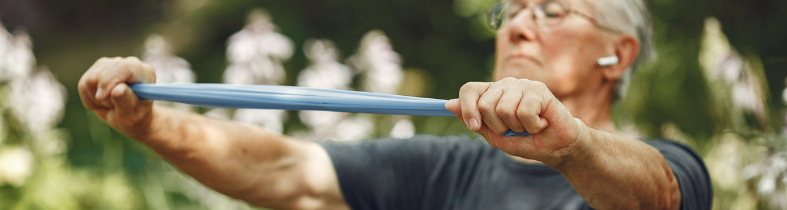
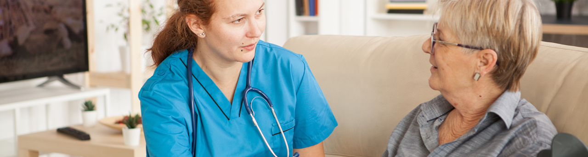

Vården ska vara kunskapsbaserad, säker, tillgänglig, effektiv, jämlik och utgå från individens behov. Programmet Framtidens Hälsosamma Åldrandet baseras på forskargruppens tidigare forskningsresultat och har sin teoretiska grund i följande begrepp.
Välfärdsteknik är en del av e-hälsa och är digital teknik som syftar till att bibehålla eller öka trygghet, aktivitet, delaktighet, stöd eller självständighet för en person som har eller löper ökad risk att få en funktionsnedsättning. Digital teknik bidrar i stor utsträckning till att hemmet blir en ny arena för hälsa för att stödja självständigt liv och förebygga eller komplettera vård- och omsorgsbehov. Enligt Socialstyrelsen bör digitala lösningar införas och användas i enlighet med de kriterier som finns för god och nära vård.
I vårt forskningsprogram ser vi digital teknik som ett verktyg (inte bara för vården utan för alla aktörer) som måste vara relevant, leda till delaktighet och bevara självbestämmande. Syftet med att använda e-hälsolösningar får inte vara att minska äldre personers möjlighet till samvaro eller möten inom vård och omsorg, utan snarare att göra dessa möten mer effektiva och givande för alla parter.
Engagerande vardagliga aktiviteter är aktiviteter som personen vill och behöver göra i sitt dagliga liv och som identifieras av äldre personer. De kan omfatta personlig omvårdnad (grundläggande färdigheter för att självständigt ta hand om sig själv, såsom äta, bada och röra sig), produktiva aktiviteter (transport, matinköp, betala räkningar) eller fritidsaktiviteter (delta i sociala,kulturella aktiviteter, evenemang). Dagliga aktiviteter som att stå och röra sig kan ge hälsofördelar, men även aktiviteter som engagerar måste läggas till för att öka värdet och upplevelsen av välbefinnande. WHO:s riktlinjer för fysisk aktivitet och stillasittande rekommenderar att äldre personer begränsar mängden stillasittande och ersätter det med fysisk aktivitet av valfri intensitet för att uppnå hälsofördelar.
Reablement är en väl beprövad social och hälsovårdande metod som används i internationellt etablerade hemvårdstjänster. Rehabilitering innebär ett personcentrerat förhållningssätt och tillhandahålls av hemtjänstpersonal i samarbete med hälso- och sjukvårdspersonal. Syftet med reablement är att "förbättra en persons fysiska och/eller andra funktioner, att öka eller bibehålla deras självständighet i meningsfulla aktiviteter i det dagliga livet på deras bostadsort och att minska deras behov av långvariga tjänster. Detta görs, i samarbete med den äldre personen och eventuella närstående, genom att ge tillräckligt stöd för att den äldre personen ska kunna utföra de dagliga aktiviteter som de behöver och vill göra (dvs. delta i vardagliga aktiviteter).
Personcentrerad vård respekterar de äldre personers val, deltagande, inflytande och autonomi. Personen respekteras som en individ med behov, värderingar och preferenser. I alla våra projekt kommer vi att betona de äldre personers rättigheter och deras individuella val och mål som en komponent för framgångsrik frisk åldrande. Personcentrering bör tillhandahållas i samarbete mellan de äldre personer och hälso- och sjukvårdspersonal, baserat på de behov och preferenser som identifierats av individerna. Att använda målsättning är avgörande för att stimulera vilja och för deltagare i en intervention. I programmet kommer full respekt för individernas val av mål att betonas, och de äldre personer kommer att uppmuntras att identifiera mål angående värdefulla engagerande vardagsaktiviteter och områden i vardagen, inklusive social funktion. Den teoretiska grunden visar det inneboende förhållandet mellan miljön, vardagsaktiviteter och personliga funktioner.
Samskapande och implementering är en process som tidigt involverar slutanvändarna – det vill säga äldre personer, närstående, personal inom hälso- och hemtjänst samt ledningen – för att utforska de mekanismer och faktorer som påverkar implementeringsprocessen. Syftet är att utveckla och införa digitala lösningar inom hälso- och socialvården. I detta program kommer vi att fortsätta vår tidigare forskning och användningen av Medical Research Councils (MRC) riktlinjer inklusive ADAPT som ett ramverk för de olika projekten. ADAPT-riktlinjerna kommer att användas när anpassning av interventioner för implementering och/eller omvärdering i nya sammanhang behövs. The Consolidated Framework for Implementation Research kommer att användas när man beskriver och analyserar resultaten av interventionerna som används i programmet.
Skörhet är ett hälsotillstånd som definieras som en progressiv åldersrelaterad nedgång i fysiologiska system som resulterar i minskade reserver av inneboende kapacitet. Detta ger extrem sårbarhet för stressfaktorer och ökar risken för negativa hälsoeffekter (WHO). Skörhet fokuserar på funktion och inte specifikt på sjukdomar Inneboende kapacitet är en sammansättning av alla fysiska och mentala förmågor som en individ kan dra nytta av vid varje tidpunkt. Funktionell kapacitet är kombinationen av, och samspelet mellan den inneboende kapaciteten och miljön. Cesari et al definition av inneboende kapacitet kan delas in i fem olika områden: kognition, psykologisk (humör och socialitet), sensorisk funktion (syn och hörsel), vitalitet (dvs. balansen mellan energiintag och energiförbrukning) samt rörelseförmåga inklusive muskelfunktion.